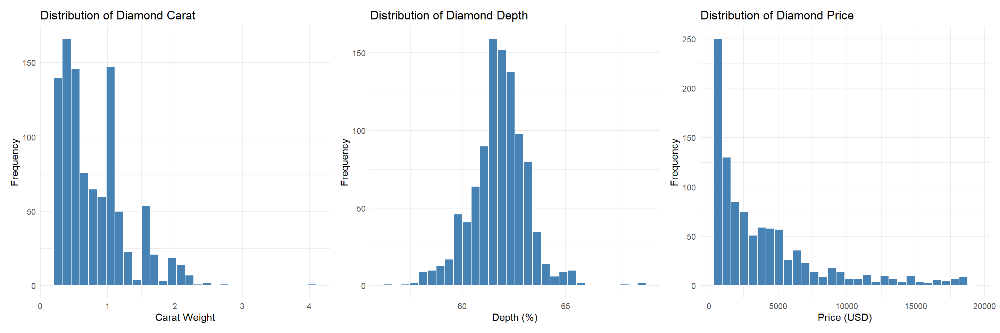

To Cadets:
This course, MA206, introduces you to the foundational principles of probability and statistics, emphasizing data literacy and inference. It begins with Block I, covering data types, visualization, and basic probability rules including counting and the behavior of random variables. Block II builds on this by exploring discrete and continuous distributions, the Central Limit Theorem, and tools for one-sample inference such as confidence intervals and hypothesis testing for proportions and means. Finally, Block III develops cadets’ ability to analyze relationships between variables through two-sample tests, linear regression, ANOVA, and goodness-of-fit testing. By the end of the course, cadets will be equipped to make sound, data-driven decisions grounded in statistical reasoning.
A Note on Technology:
In this course the primary tool used for data analysis is R. Throughout this course you will implement techniques for summarizing, visualizing, and analyzing data. The primary focus of this course is not for you to become masters in coding, however building on skills learned in CY105 will help your analysis in understanding how to use information technology to demonstrate successful outcomes in this course.
Of note, some of the functions we use in R require the package tidyverse, everytime you begin working in RStudio, the beginning code chunk should resemble:
#> echo:FALSElibrary(tidyverse)
── Attaching core tidyverse packages ──────────────────────── tidyverse 2.0.0 ──
✔ dplyr 1.1.4 ✔ readr 2.1.5
✔ forcats 1.0.0 ✔ stringr 1.5.1
✔ ggplot2 3.5.2 ✔ tibble 3.2.1
✔ lubridate 1.9.4 ✔ tidyr 1.3.1
✔ purrr 1.0.4
── Conflicts ────────────────────────────────────────── tidyverse_conflicts() ──
✖ dplyr::filter() masks stats::filter()
✖ dplyr::lag() masks stats::lag()
ℹ Use the conflicted package (<http://conflicted.r-lib.org/>) to force all conflicts to become errors
library(tidyr)library(patchwork)
BLOCK I: Data and Randomness
Types of Data, Sampling, and Bias
Fundamental to statistical analysis is understanding the types of data we encounter, the methods we use to collect them, and the potential sources of bias that can undermine the validity of our conclusions. We distinguish between categorical (qualitative) and quantitative (numerical) data, and further classify quantitative data as discrete or continuous. Understanding these distinctions is critical for selecting the correct tools for analysis and interpretation.
We also examine various sampling methods, including simple random sampling, stratified sampling, cluster sampling, and systematic sampling. Each method has strengths and weaknesses depending on the research context, and knowing when to apply each appropriately is a key skill for data-driven decision-making.
Finally, we explore the concept of bias in data collection. We identify common sources such as selection bias, response bias, and measurement bias, and discuss how poor sampling practices or flawed survey design can distort findings. This lesson sets the stage for the rest of the course by highlighting the importance of thoughtful data collection and critical evaluation of data sources.
As an example let us look at a dataset aggregated from over 50,000 diamonds:
# A tibble: 6 × 10
carat cut color clarity depth table price x y z
<dbl> <ord> <ord> <ord> <dbl> <dbl> <int> <dbl> <dbl> <dbl>
1 1.02 Good G VS2 63.8 59 6080 6.34 6.27 4.02
2 0.31 Ideal F VVS1 61.9 53.5 882 4.36 4.39 2.71
3 0.6 Premium D SI2 61.3 61 1428 5.46 5.4 3.33
4 0.41 Ideal E IF 62.1 54 1419 4.75 4.81 2.97
5 0.72 Very Good H VS1 62.2 54 2877 5.74 5.76 3.57
6 1.2 Ideal F VS2 62.6 56 8486 6.78 6.73 4.23
Each of the rows is an individual diamond, generally called an observation. Each of the columns are unique aspects measured for every observation, called variables. Variables are either categorical, qualitative aspects of each measurement, or quantitative, a numbered entry.
Exploratory Data Analysis
Understanding, communicating, and interpreting your data is paramount to any initial data analysis project. These are done through numerous visualizations and summary statistics which we will learn to regularly implement when given any new dataset.
One Variable – Visualizations and Summary Statistics
Starting with a variable-by-variable approach is a natural first step. This is done rapidly in R with the following few functions:

Histograms tell us where most of the values for a quantitative variable lie in its given distribution. We can determine skewness, a measure of how lopsided the data appear or if there are any asymmetries or tails.
Similar to a histogram, a boxplot will tell us exactly where the median, 1st and 3rd quartiles, and outliers exist for any quantitative variable. The ‘whiskers’ are determined by \(1.5 \times IQR\) where the inter-quartile range is the \(3rd - 1st\) quartiles.
# A tibble: 7 × 7
Variable Mean Median SD Var Min Max
<chr> <dbl> <dbl> <dbl> <dbl> <dbl> <dbl>
1 carat 0.790 0.7 0.462 0.213 0.23 3.24
2 depth 61.8 61.9 1.40 1.97 56.3 68.9
3 table 57.5 57 2.26 5.11 50 66
4 price 3874. 2387 3913. 15308046. 337 18692
5 x 5.72 5.68 1.10 1.21 3.88 9.44
6 y 5.72 5.68 1.09 1.20 3.9 9.4
7 z 3.53 3.52 0.677 0.458 2.39 5.85
The above are the predominant statistics you want to discern for every quantitative variable in your dataset. The benchmark location statistics are the mean, median, max, and min, while the standard deviation and variance are measures of how spread out the data are relative to one another.
A scatterplot is the main tool to visualize and identify a relationship between two quantitative variables. Oftentimes, coloring each observation by another categorical variable is a way to maximize effectiveness of a single plot, as you are encoding more information within the same space.
p10 <- df %>%group_by(cut) %>%summarise(avg_price =mean(price)) %>%ggplot(aes(x = cut, y = avg_price)) +geom_bar(stat ="identity", fill ="pink") +labs(title ="Average Price by Diamond Cut Quality",x ="Diamond Cut",y ="Average Price ($)" ) +theme_minimal()p11 <- df %>%group_by(color) %>%summarise(avg_price =mean(price)) %>%ggplot(aes(x = color, y = avg_price)) +geom_bar(stat ="identity", fill ="skyblue") +labs(title ="Average Price by Diamond Color Rating",x ="Diamond Color",y ="Average Price ($)" ) +theme_minimal()p12 <- df %>%group_by(clarity) %>%summarise(avg_price =mean(price)) %>%ggplot(aes(x = clarity, y = avg_price)) +geom_bar(stat ="identity", fill ="magenta") +labs(title ="Average Price by Diamond Clarity",x ="Diamond Clarity",y ="Average Price ($)" ) +theme_minimal()p10 | p11 | p12
carat depth table price x y
carat 1.000000000 -0.003309893 0.2218141 0.91021728 0.9771650 0.97682747
depth -0.003309893 1.000000000 -0.3160834 -0.02418736 -0.0637861 -0.06707873
table 0.221814133 -0.316083433 1.0000000 0.16644576 0.2396640 0.23527498
price 0.910217282 -0.024187362 0.1664458 1.00000000 0.8763495 0.87899268
x 0.977165035 -0.063786104 0.2396640 0.87634955 1.0000000 0.99885498
y 0.976827473 -0.067078728 0.2352750 0.87899268 0.9988550 1.00000000
z 0.976811196 0.058609118 0.1951975 0.87535333 0.9913793 0.99109238
z
carat 0.97681120
depth 0.05860912
table 0.19519747
price 0.87535333
x 0.99137925
y 0.99109238
z 1.00000000
Correlation is the only multivariate summary statistic we will be using in this course, used to describe how two variables tend to move in tandem with one another. A perfect linear association evokes a correlation of 1, the opposite being a perfect negative association with a correlation of -1. No association is implied by a correlation near 0.
Mathematically: > Definition > For any two variables X,Y, the correlation of X and Y are: \[
r = \frac{\sum_{i=1}^n (x_i - \bar{x})(y_i-\bar{y})}{\sum_{i=1}^n (x_i - \bar{x})^2\sum_{i=1}^n (y_i - \bar{y})^2}
\]
Probability
Sample Space and Random Experiment (\(\Omega\))
A random experiment is a process that produces an outcome which cannot be predicted with certainty in advance. It must be well-defined, have more than one possible outcome, and be repeatable under similar conditions. Each performance of the experiment results in a single outcome from the sample space. The sample space is the set of all possible outcomes of a random experiment.
Definition:
The sample space is the set of all possible outcomes of a random experiment, denoted \(\Omega\).
An event is a subset of the sample space. It can represent one or more outcomes.
If all outcomes in \(\Omega\) are equally likely, then for any event \(A\):
\[
\mathbb{P}(A) = \frac{\text{Number of outcomes in } A}{\text{Total outcomes in } \Omega}
\]
Examples:
Tossing a coin once: \(\Omega = {\text{Heads}, \text{Tails}}\)
Rolling a 6-sided die: \(\Omega = {1, 2, 3, 4, 5, 6}\)
Letter grade in MA206: \(\Omega = {A, B, C, D, F}\)
Number of emails received in an hour: \(\Omega = {0, 1, 2, \dots}\)
Probability Measure (\(\mathbb{P}\))
A probability measure is a rule, denoted \(\mathbb{P}\), that assigns a number between 0 and 1 to every event in a collection of events (called a sigma-algebra, denoted ). These probabilities must follow three key rules, known as the axioms of probability.
Axioms of Probability:
Non-Negativity
For any event \(A\), the probability is never negative: \[
\mathbb{P}(A) \geq 0
\]
Normalization
The probability of one of the events happening over the entire sample space is 1: \[
\mathbb{P}(\Omega) = 1
\]
Additivity (for disjoint events)
If events $A_1, A_2, A_3, $ are mutually exclusive (no overlap), then the probability that any one of them occurs is the sum of their individual probabilities: \[
\mathbb{P}\left(\bigcup_{i=1}^{\infty} A_i\right) = \mathbb{P}(A_1) + \mathbb{P}(A_2) + \mathbb{P}(A_3) + \cdots
\]
Example (Simple):
Let \(A\), \(B\), and \(C\) be outcomes when rolling a die:
These three rules form the mathematical foundation of all probability calculations — everything else builds on them.
Set Operations on Events:
The complement of an event ( A ), written ( A^c ), consists of all outcomes in ( ) that are not in ( A ):
\[
\mathbb{P}(A) + \mathbb{P}(A^c) = 1
\]
The intersection $ A B $ consists of outcomes where both \(A\) and \(B\) occur.
The union\(A \cup B\) consists of outcomes where either \(A\), \(B\), or both occur:
\[
\mathbb{P}(A \cup B) = \mathbb{P}(A) + \mathbb{P}(B) - \mathbb{P}(A \cap B)
\]
Two events \(A\) and \(B\) are disjoint (mutually exclusive) if they cannot both occur:
\[
A \cap B = \varnothing \quad \text{and} \quad \mathbb{P}(A \cap B) = 0
\]
Conditional Probability
For events \(A\) and \(B\) with $0 < P(B) $, the conditional probability of \(A\) given \(B\) is:
\[
P(A \mid B) = \frac{P(A \cap B)}{P(B)}
\]
Example: One card is drawn from a standard deck.
Let \(A\): card is a Queen, and \(B\): card is a face card.
Find \(P(A)\), \(P(B)\), and \(P(A \mid B)\).
Law of Total Probability
Definition:
If \(E_1, \dots, E_n\) is a partition of the sample space (mutually exclusive and exhaustive), then for any event \(A\):
\[
P(A) = \sum_{i=1}^{n} P(E_i) P(A \mid E_i)
\]
Example:
A fair die is rolled. Let event A: “an even number is rolled”.
Let:
- \(E_1\): roll is 1 or 2
- \(E_2\): roll is 3 or 4
- \(E_3\): roll is 5 or 6
Find:
- \(P(A \mid E_1)\), \(P(A \mid E_2)\), \(P(A \mid E_3)\)
- Then use the Law of Total Probability to find \(P(A)\)
Bayes’ Theorem
Definition:
If \(E_1, \dots, E_n\) is a partition of the sample space and \(P(A) > 0\), then:
Example:
Two urns:
- Urn 1: 1 red, 1 blue
- Urn 2: 3 red, 1 blue
Pick an urn at random, then draw one ball.
If the ball is red, what is the probability it came from Urn 1?
Counting Principles
Before we can begin a thorough treatment of probability, some concepts in counting are needed to identify four common situations. These arise depending on when things are “allowed” to repeat or the “order” items are chosen in matters. The ability to discern when these four situations arise is more than half the battle.
Ordered with Replacement
Think of the number of ways of choosing a 4-digit passcode on your phone.
The order of the numbers matters, and you are allowed to repeat the same number. So how many arrangements are there? Since repetition is allowed and order matters, there are 10 digits for each position, giving:
Think of the number of ways I can create a batting order from 9 position players.
The order still matters, but players cannot be repeated. This is a permutation — an ordered arrangement without replacement.
\[
{}_nP_r = P(n, r) = \frac{n!}{(n - r)!}
\]
For example, the number of ways to assign the first 3 batting positions from 9 players:
Think of how many ways you can choose 3 scoops of ice cream from 5 unique flavors without repeats.
Because order doesn’t matter and repeats aren’t allowed, we use combinations:
Think of how many different combinations of 3 scoop ice cream cones you can make with 5 unique flavors while allowing repeats.
This is the trickiest scenario. The order doesn’t matter, and repetition is allowed. The formula is:
\[
\text{Unordered Arrangements with Replacement} = \binom{r+n-1}{r} = \frac{(r+n-1)!}{r!(n-1)!}
\]
Example: choosing 3 scoops from 5 flavors (with repeats):
\[
\binom{3+5-1}{3} = \binom{7}{3} = 35
\]
This can be understood using the stars and bars method: selecting ( r ) scoops with ( n-1 ) dividers.